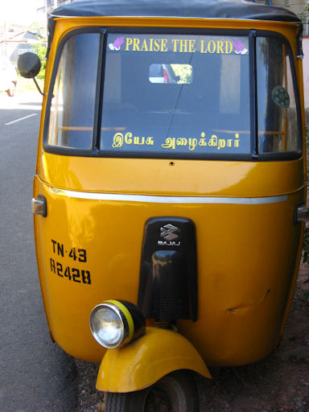

mailto:payer@payer.de
Zitierweise | cite as:
Payer, Alois <1944 - >: Sanskritkurs. -- 54. Lektion 54. -- Fassung vom 2009-03-11. -- URL: http://www.payer.de/sanskritkurs/lektion54.htm
Erstmals hier publiziert: 2009-01-28
Überarbeitungen: 2009-03-11 [Verbesserungen]
Anlass: Lehrveranstaltungen 1980 - 1984
©opyright: Dieser Text steht der Allgemeinheit zur Verfügung. Eine Verwertung in Publikationen, die über übliche Zitate hinausgeht, bedarf der ausdrücklichen Genehmigung des Verfassers
Dieser Text ist Teil der Abteilung Sanskrit von Tüpfli's Global Village Library
Falls Sie die diakritischen Zeichen nicht dargestellt bekommen, installieren Sie eine Schrift mit Diakritika wie z.B. Tahoma.
Die Devanāgarī-Zeichen sind in Unicode kodiert. Sie benötigen also eine Unicode-Devanāgarī-Schrift.
Mit Lektion 54 beginnt im Universitätsunterricht das 2. Semester. Ab jetzt läuft der Kurs nur noch neben dem Hauptthema dieses Semesters: der Lektüre der ganzen Bhagavadgītā. Lernziel ist eine solche Geläufigkeit im Lesen eines mittelschweren Textes, dass im letzten Drittel des Semesters große Teile der Bhagavadgītā aus dem Stegreif übersetzt werden können. Zu Beginn wurden im Universitätsunterricht noch Wortlisten ausgeteilt, später mussten die Studierenden selbst entsprechende Wörterbücher (Monier-Williams, Apte, PW) benutzen.
Der Kurs zur Bhagavadgītā wird vorläufig noch nicht online zur Verfügung gestellt.
Die Lektionen des Sanskritkurses behandeln Themen der Sanskritgrammatik, die bisher noch nicht behandelt wurden.
| An Desiderativstämme (इच्छाप्रकृति)
("etwas zu tun wünschen" ; "im Begriffe sein, etwas zu tun") tritt
zur Bildung von Nomina agentis das Suffix -u. (Bildung der Desiderativstämme folgt später) Beispiel:
|
Abb.: अयुयुत्सुरर्जुनः
भगवद्गीतोपदेशः
Tirupati = తిరుపతి
[Bildquelle: Raji Srinivas
/ Wikipedia. GNU FDLicense]
|
Die त्रिष्टुभ् ("Drei-Jauchzer") erscheint in den Epen inmitten der üblichen श्लोक-Partien gerade an Stellen, wo Stimmung oder Handlung einen besonderen Aufschwung oder Abschluss erfahren. Die त्रिष्टुभ्-Strophe besteht aus vier elfsilbigen पाद, die sich im Bau nicht voneinander unterscheiden. Die त्रिष्टुभ् hat zwei Grundschemata, je nachdem, ob die Zäsur (Wortende, Kompositionsfuge oder vor bestimmten Suffixen wie -tara, -tama u.ä.) nach der 4. oder 5. Silbe des पाद steht. Schema I:
Schema II:
Die Quantität der vier letzten Silben ist also in beiden Schemata gleich. जगती-Grundform: wie bei त्रिष्टुभ्, aber 12-silbig. Die letzten 5 Silben jedes Pada heben folgende Quantitäten:
Daneben gibt es die sog. typisch überzählige त्रिष्टुभ् mit fünfsilbigem Anfangsglied, die weitergeht wie eine त्रिष्टुभ् mit viersilbigem Anfangsglied:
In späterer Zeit werden die Formen der त्रिष्टुभ् festgelegt nach einem strengen Schema der Längen und Kürzen, die Zäsur spielt keine Rolle mehr. Die wichtigsten späteren Formen sind: a) इन्द्रवज्रा
b) उपेन्द्रवज्रा
c) उपजाति
|
| Merkverse: स्यादिन्द्रवज्रा यदि तौ जगौ गः ।
उपेन्द्रवज्रा प्रथमे लघौ सा ।
अनन्तरोदीरितलक्ष्मभाजौ
|
Bestimmen Sie in Bhagavadgītā II Triṣṭubhs und Jagatīs.
Beispiel einer Rezitation: http://www.vaisnava.cz/gita/mp3/Bhagavad-gita02.mp3. -- Zugriff am 2009-01-28
| Gemeinsam ist allen Bildungstypen des
Aorist (लुङ्) das Augment a-, das nach den gleichen Regeln wie im
Imperfekt (लङ्) vorgesetzt wird. Vom Aorist sind im Sanskrit nur Indikativ und Prekativ gebvräuchlich. |
Es gibt folgende Bildungstypen des Aorist
(लुङ्):
Verteilung der Wurzeln auf die einzelnen Bildungstypen siehe bei den einzelnen Typen |
| Bildung: Augment + Wurzel + Sekundärendung Endung der 3.pl.P ist -ur. Ātmanepada ist nicht gebräuchlich. |
Beispiel:
पा 1P "trinken"
एकवचनम् बहुवचनम् 1. तृतीयः अपाम्
a-pā + amअपाम 2. मध्यमः अपास् अपात 3. प्रथमः अपात् अपुर्
a-p-ur (Tiefstufe!)
Nur von 12 Wurzeln wird der Wurzelaorist gebildet:
Zu भू 1P wird der Wurzelaorist so gebildet:
एकवचनम् बहुवचनम् 1. तृतीयः अभूवम् अभूम 2. मध्यमः अभू्स् अभूत 3. प्रथमः अभूत् अभूवन् (!!!)
Eine Spezialform des Wurzelaorist ist der Aorist der 3.sg.Passiv. Dieser kann von allen Wurzeln gebildet werden.
| Bildung: Augment + Wurzel + i Die Wurzel hat folgende Gestalt: Hochstufe:
Dehnstufe:
Einschub von y vor Endung:
Nasalinfix:
(Die übrigen Formen des Passiv werden im Aorist durch Ātmanepada-formen wiedergegeben). |
Übersetzen Sie schriftlich folgende Formen und bilden Sie die entsprechenden Aoristformen:

Abb.: त्रिचक्रेणेश्वरः स्तूयते
Tamil Nadu
[Bildquelle: driek. --
http://www.flickr.com/photos/driek/2411004380/. -- Zugriff am 2009-01-28. --
Creative
Commons Lizenz (Namensnennung, keine kommerzielle Nutzung, shre alike)]
Zu Lektion 55